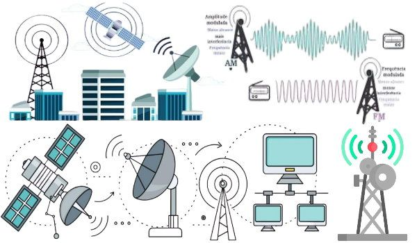
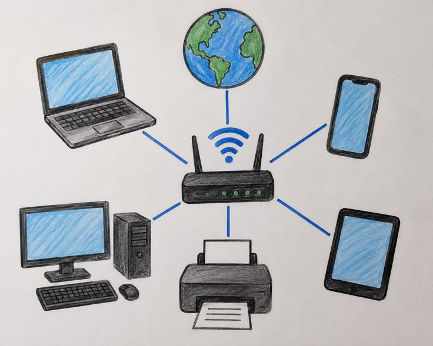
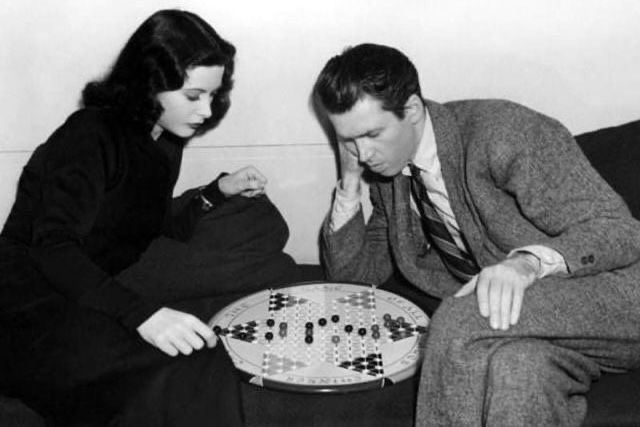
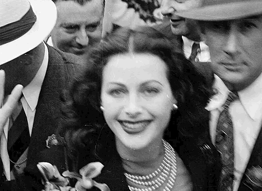

Considerações finais
O legado de Hedy Lamarr demonstra como a criatividade e o conhecimento científico podem transformar a comunicação e inspirar novas gerações. Sua contribuição para os estudos sobre salto de frequência ajudou a estabelecer conceitos relevantes para o desenvolvimento das tecnologias modernas de comunicação sem fio.


Essa técnica, conhecida como frequency hopping, consiste na transmissão de sinais por diferentes frequências em uma sequência coordenada, tornando a comunicação mais resistente a interferências e dificultando sua interceptação. Embora Hedy Lamarr não tenha inventado diretamente tecnologias como Wi-Fi e Bluetooth, sua ideia contribuiu para os princípios que influenciaram o avanço dos sistemas de comunicação sem fio. Atualmente, essas tecnologias são essenciais para conectar dispositivos, permitir o acesso à internet, facilitar a troca de informações e viabilizar recursos como casas inteligentes, comunicação móvel e equipamentos conectados. Assim, o legado de Lamarr evidencia como uma inovação concebida décadas atrás pode contribuir para transformar a maneira como a sociedade se comunica e compartilha conhecimento.



Sua história também representa a necessidade de reconhecer e valorizar a participação das mulheres na ciência, especialmente em áreas tecnológicas. Ao longo da história, muitas mulheres contribuíram para importantes descobertas, mas nem sempre receberam o devido reconhecimento. Dar visibilidade a essas trajetórias é essencial para incentivar meninas e jovens a acreditarem em suas capacidades e a ocuparem espaços na ciência e na inovação.